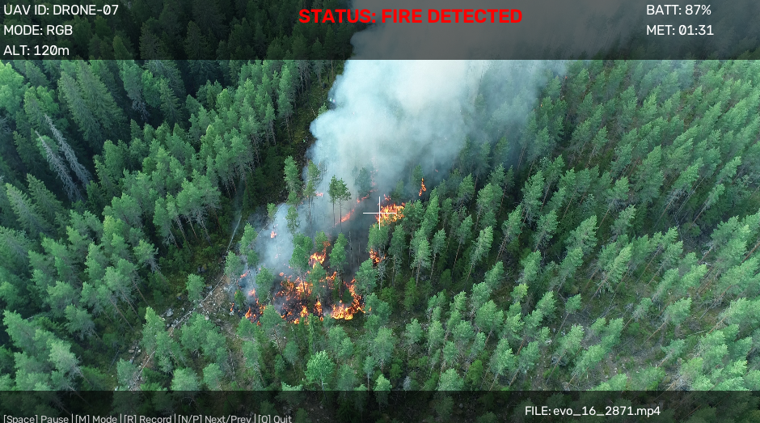
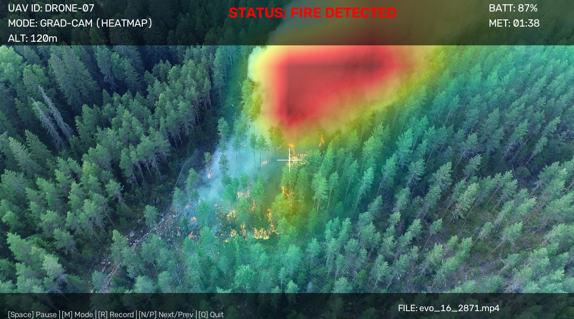
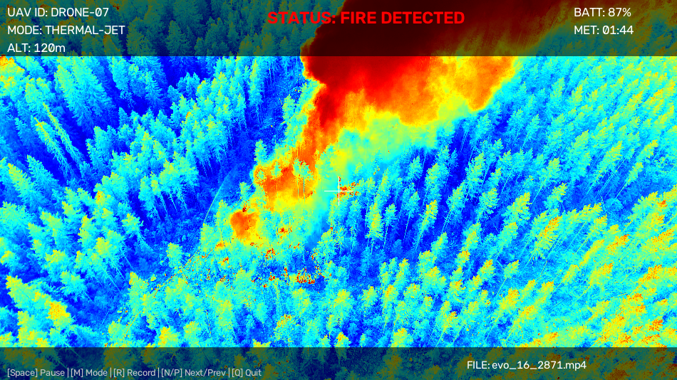
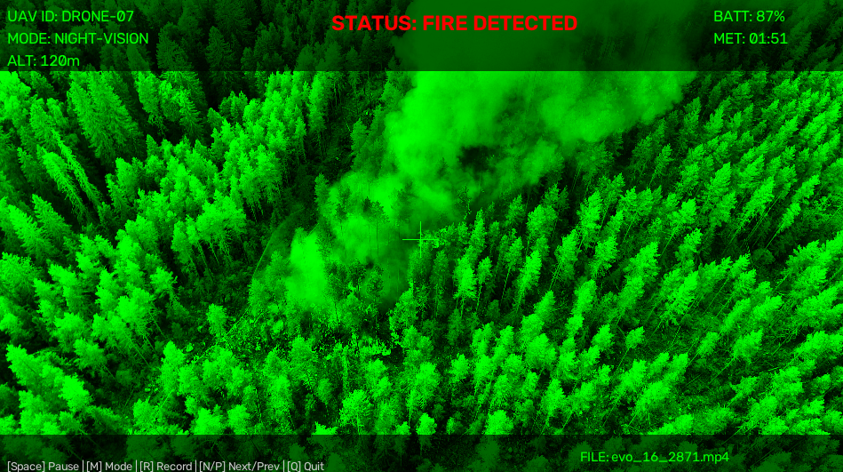
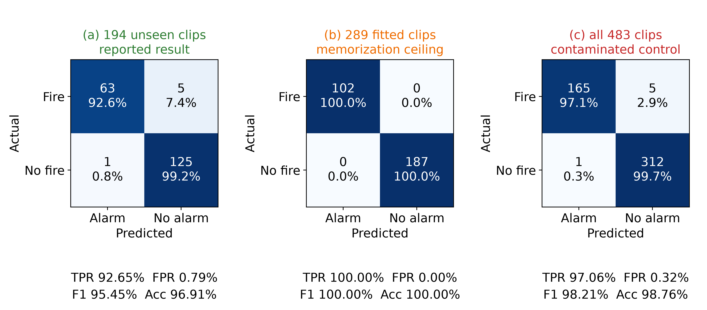
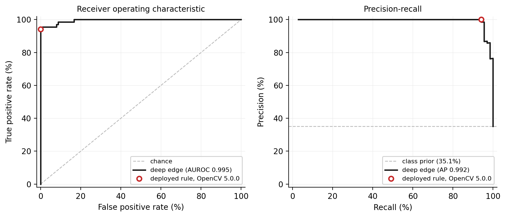

1 Department of Computer Engineering, Faculty of Engineering, Haliç University, 5. Levent Mahallesi, 15 Temmuz Şehitler Caddesi No. 14/12, 34060 Eyüpsultan, Istanbul, Türkiye
Alaeddin Gazi Toprak: ORCID 0009-0005-0822-5700, Email: 24451505003@ogr.halic.edu.tr; Alireza Souri: ORCID 0000-0001-8314-9051
*Corresponding Author: Alireza Souri. Email: alirezasouri@halic.edu.tr
This paper reports one component of the first author’s master’s thesis, IoV-Supported Drone Real-Time Fire Detection, Department of Computer Engineering, Haliç University. It is confined to the onboard detection node; the communication layer is not addressed here.
ABSTRACT: Deep convolutional detectors can exceed the energy budget of lightweight unmanned aerial vehicles, motivating hand-set color rules that run on a central processing unit. This paper tests that justification. A fully specified detector intersecting hue-saturation-value, red-green-blue and luma-chroma spaces reaches, on the test split of a public wildfire dataset, a 52.65% F1-score against the 55.89% of a constant fire predictor and 43.41% accuracy against the 61.22% of a constant no-fire predictor. A saturation sweep moves recall by 32.70 points while precision stays within 2.25 points of the class prior, and the best threshold over the pipeline's own box count is the degenerate one. A model fitted on a 512-bin color histogram of the same images, by contrast, reaches 82.28% F1 and 85.28% with vertical-band histograms. The cheapest learned model costs 1.35 times the hand-set pipeline while scoring 77.33% against its 49.14%. The pipeline therefore destroys information its inputs contain, and neither its thresholds nor the compute budget explains this, and a resolution control attributes 84.19% of spurious detections to an absolute area threshold. The detector itself is then replaced: a retrained MobileNetV3-Small reaches an average 93.83% true positive rate at a 0.32% false positive rate on the 194 clips of an independent 483-clip real aerial corpus that contributed no training gradient, against 100.00% on the clips it was fitted on and 97.06% when the clip-level partition is ignored; that 4.41-point gap underscores the importance of proper dataset partitioning. Two further controls bound the figure: every negative comes from only one of the two source corpora, and holding the source constant lowers the recall to 85.29%, while partitioning at the source event rather than the clip costs a further point. The replacement clears null baselines the hand-set rule does not, and the curve implied by its alarm rule reaches an area of 0.995 on the held-out cohort. Minor variations across video decoders are documented to ensure a conservative evaluation.
KEYWORDS: Edge computing; hand-crafted features; learned baseline; multi-color-space fusion; null baseline; reproducibility; unmanned aerial vehicles; wildfire detection
Wildfire management requires incipient-stage intervention to prevent extensive ecological and economic degradation [1–3]. Conventional early warning mechanisms, including satellite-based synthetic aperture radar and static observation towers, frequently miss the critical initial intervention window because of orbital revisit delays and geographical obstructions [4]. Unmanned aerial vehicles (UAVs) address these physical limitations through low-altitude deployment and flexible revisit scheduling [5,6], supported by systematic coverage path planning over the area at risk [7]. However, relying on continuous teleoperation, that is, streaming raw high-resolution video payloads to ground control stations, exposes disaster response networks to bandwidth bottlenecks, high cognitive load for human operators, and total system failure during signal loss.
To mitigate transmission dependency, surveillance systems must execute visual inference locally through edge computing [8]. This introduces a hardware-dependent algorithmic constraint: deep convolutional neural networks (CNNs) can provide high mean average precision (mAP), but their cost depends on model design, input resolution, accelerator availability and the target platform. Deploying comparatively heavy models on tactical or lightweight UAVs can accelerate battery drain, induce thermal throttling, and reduce flight endurance [9]. Basic color thresholding avoids some of these costs, but can yield a false-positive rate too high for autonomous operation by classifying stationary red vehicles, autumnal foliage, or solar reflections as active fires.
The aerial node envisaged here does not operate alone. UAV-assisted Internet of Vehicles (IoV) architectures place the aircraft in a vehicular network alongside ground units and response vehicles; the design space for that integration has been surveyed by Hemmati et al. [27] and the connectivity substrate on which it depends by Souri et al. [28]. Such an architecture rests on a prerequisite that is seldom audited on its own: the verdict the aerial node transmits must be worth transmitting. A link that carries an alarm produced by a rule a constant predictor would beat is propagating noise, and the quality of that verdict is fixed before the link is reached. This paper therefore audits the node and not the network. The communication substrate, its latency budget and its failure modes lie outside its scope and no claim is made about them anywhere below; what is established is whether the detector that would sit behind such a link earns its place there.
This paper implements the strongest CPU-only heuristic detector the authors could construct within these constraints, and then subjects it to an adversarial evaluation whose purpose is to establish what it achieves, where it fails, why it fails, whether the stated motivation for building it that way holds, and what should replace the part that does not work. The contributions are therefore diagnostic rather than performative, and the last of them is constructive:
The remainder of this paper is organized as follows. Section 2 reviews related literature in computer vision and edge computing. Section 3 details the mathematical formulation of the multi-color-space architecture. Section 4 presents the image-level, ablation and latency results, and closes in Section 4.2 with the deep edge replacement. Section 5 states what the study does and does not establish, and what a defensible successor architecture would require.
The adaptation of computer vision for autonomous fire detection is characterized by a methodological evolution from static pixel dominance to deep spatiotemporal pattern recognition. Early research relied primarily on the RGB color space, postulating that flame cores exhibit markedly higher red-channel intensities than the green and blue channels, and deriving explicit inter-channel ordering rules on that basis [10]. However, the susceptibility of the RGB model to environmental illumination and shading prompted a transition toward the HSV color space, which isolates chromaticity (hue) from brightness (value). Subsequent advances demonstrated that the YCbCr model, and specifically the separation of luma (Y) from red chroma (Cr), provides effective filtering of high-lumen artifacts in central fire zones and yields a generic color model that transfers across illumination conditions [11]. Color-space design for fire segmentation remains an active problem rather than a settled one: Giwa and Benkrid [12] recently optimized an RGB-to-flame color-space transform by hybrid metaheuristic search and reported a 20% mean F1-score improvement over conventional color models, which is direct evidence that the standard spaces used in this paper are a weak substrate for the task.
To address the inherent limitation of purely color-based static heuristics, namely the misclassification of stationary inorganic objects, spatiotemporal methods were introduced to quantify the physical oscillation of flames, employing frame differencing and flame-contour dynamics to isolate irregular kinetic behavior [13].
In recent years, deep learning paradigms [14] and advanced classical models [15] have largely overshadowed basic heuristic approaches. CNNs have achieved high mAP metrics [16–18] by extracting complex contextual and textural features from large datasets. However, this accuracy is inherently coupled with computational cost: deploying multi-gigaFLOP architectures on lightweight UAVs induces thermal throttling and limits operational flight times [8,9]. Alternatively, classical image processing [19], color-based heuristic models [10,11,13], and optical remote sensing techniques [4] provide baseline computational efficiency. Foundational fusion methodologies [20] and bounding-box regression techniques such as intersection-over-union (IoU) variants [21] have been used to optimize such systems for real-time deployment.
Work published since 2022 has concentrated almost entirely on making deep detectors small enough to fly. Bouguettaya et al. [22] survey early wildfire detection from UAVs using deep-learning computer vision. Luan et al. [23] enhance YOLOX for small-object wildfire detection in UAV imagery through a multi-level feature extraction structure and attention in the neck. Lu et al. [24] propose FCMI-YOLO for edge devices, combining a lightweight backbone module, cross-scale feature fusion and mixed local channel attention, and report a 40% parameter reduction relative to YOLOv5s. Mamadmurodov et al. [25] pair an EfficientNetV2 backbone with channel attention for early forest fire detection. Closest in spirit to the deployment question raised here, Titu et al. [26] distil YOLOv8 and run it on a single-board computer carried by a quadrotor, reporting operation at approximately 8 frames per second in live flight.
Two properties of this recent literature motivate the evaluation design adopted in Section 4. First, each of these systems is benchmarked against other deep detectors; none of them reports a comparison against a color-threshold pipeline, and none reports a constant-predictor baseline on its own class distribution. How much a modern learned detector actually gains over the heuristics it replaced is therefore not answered by this literature. The present paper approaches the question from the opposite direction, first by quantifying how little the heuristic branch achieves against explicit null baselines, and then by fitting a deliberately minimal learned model on the same features, so that any gap is attributable to the decision rule rather than to the feature set or the compute budget. Second, the class balance of the evaluation sets is rarely stated, which is precisely the condition under which a constant predictor becomes competitive, as Section 4.1 demonstrates.
On the communication side, the integration of UAVs into vehicular networks has been surveyed systematically by Hemmati et al. [27], who map the UAV-assisted Internet of Vehicles design space, and the connectivity and V2X substrate on which such a system depends has been reviewed by Souri et al. [28]. At the deployment layer, Ebrahimishadman and Souri [29] run an edge-optimized YOLOv8 detector together with an optical-character-recognition stage on a Raspberry Pi under ONNX Runtime, without an accelerator, reporting an end-to-end latency of about 1.7 s per image for that task. That result bears directly on the argument of this paper from the opposite direction: a learned detector does run on CPU-only edge hardware, so the question is not whether learning is affordable there but what latency the application can tolerate.
The fundamental departure of the proposed architecture from contemporary deep learning methodologies lies in bypassing the hardware cost barrier for edge computing. Rather than relying on the GPU acceleration assumed by the CNN detectors of [16–18], this research executes a simultaneous logical intersection of the RGB, HSV, and YCbCr color spaces, augmented by a kinetic flickering layer that applies an explicit penalty to temporally static clusters. The intended effect of that penalty is to reduce stationary detections while retaining the lightweight processing footprint required for continuous UAV deployment. Section 4.2 replaces the stage outright and does not isolate the effect on the video available here, and Section 4.1 shows that the chromatic stage alone carries a false-positive rate above 80% on still images; we therefore present the formulation as a hypothesis that the evaluation tests rather than as an established improvement.
To establish a rigorous baseline for comparison against deep learning approaches, we implemented a deterministic, multi-color-space heuristic pipeline (V1) targeting CPU-only edge constraints. The pipeline cascades chromatic filtering, temporal analysis, and spatial morphology [30] to isolate candidate fire regions.
Rather than relying on a single color space, the initial detection phase fuses optical radiation thresholds across Hue-Saturation-Value (HSV), Red-Green-Blue (RGB), and Luma-Chroma (YCbCr) spaces. A candidate pixel must satisfy the intersection of all three threshold sets to proceed. To differentiate dynamic flames from static color-matched artifacts, a temporal flicker ratio [31] is calculated over a three-frame history. Finally, intersecting flame clusters generate bounding boxes via connected component analysis, followed by a greedy proximity merge to consolidate adjacent overlapping regions.
\[ F_t(x,y) = \frac{1}{T-1} \sum_{k=0}^{T-2} \left| I_{t-k}(x,y) - I_{t-k-1}(x,y) \right| \]
Here, \( T \) denotes the temporal history length and \( I_t(x,y) \) is the pixel intensity at spatial location \( (x,y) \) in frame \( t \).
\[ M(x,y) = \big[ M_{HSV}(x,y) \wedge M_{RGB}(x,y) \wedge M_{YCbCr}(x,y) \big] \vee M_{white\text{-}hot}(x,y) \]
where \( M_{HSV} \), \( M_{RGB} \), and \( M_{YCbCr} \) denote the binary masks generated by the thresholds in Table 1, and \( M_{white\text{-}hot} \) denotes the white-hot bypass mask.
The exact parameters, threshold boundaries, and morphological kernels used in the V1 pipeline are formalized in Table 1 to ensure complete reproducibility.
| Stage | Parameter / Color Space | Thresholds / Values |
|---|---|---|
| Chromatic Filtering | HSV | Flame core H∈[0,15] ∧ S ≥ 60; halo H∈[15,35] ∧ S ≥ 80; red-edge H∈[160,180] ∧ S ≥ 60 (OR of the three); common V ≥ 210 |
| RGB | R > G > B ∧ R > 210 ∧ G > 130 | |
| YCbCr | Cr > 150 ∧ Cr > Cb ∧ Y > Cb | |
| White-hot bypass | R > 240 ∧ G > 230 ∧ B > 200 (eroded 15×15, OR'd into the intersection) | |
| Temporal Analysis | Flicker Ratio | ≥ 0.01 (mean of the flicker mask in the box; motion threshold τ=30, closed 7×7) |
| Spatial Morphology | Minimum cluster area | 600 px at the 50 m reference altitude, scaled by Eq. (2) |
| Kernels | 15×15 close → 5×5 open → 15×15 dilate ×2 (main mask); 7×7 close (flicker mask); 15×15 erode (white-hot bypass) |
| Input | frame F (8-bit/channel), reported altitude h (m), previous frame Fprev or ∅ |
| Output | set of merged bounding boxes with heuristic scores \( C_{alg} \) |
| 1 | \( M_{hsv} \leftarrow \) OR of the three hue-band masks of Table 1, each with \( V \geq 210 \) |
| 2 | \( M_{rgb} \leftarrow (R > G > B) \wedge (R > 210) \wedge (G > 130) \) |
| 3 | \( M_{ycc} \leftarrow (Cr > 150) \wedge (Cr > Cb) \wedge (Y > Cb) \) |
| 4 | \( M \leftarrow M_{hsv} \wedge M_{rgb} \wedge M_{ycc} \) |
| 5 | \( M_{wh} \leftarrow \mathrm{erode}\big((R > 240) \wedge (G > 230) \wedge (B > 200),\; 15 \times 15\big) \); \( M \leftarrow M \vee M_{wh} \) |
| 6 | \( M \leftarrow \mathrm{dilate}_{15\times15}^{\times 2}\big(\mathrm{open}_{5\times5}(\mathrm{close}_{15\times15}(M))\big) \) |
| 7 | if \( F_{prev} \neq \emptyset \) then \( M_{flick} \leftarrow \mathrm{close}_{7\times7}\big(|F - F_{prev}| > \tau_{motion}\big) \) else \( M_{flick} \leftarrow \emptyset \) |
| 8 | for each external contour \( c \) of \( M \) with area \( > A_{min}(h) \) (Eq. 2) do |
| 9 | \( s \leftarrow \mathrm{area}(c)/\mathrm{area}(\mathrm{convexHull}(c)) \); \( \rho \leftarrow \) mean of \( M_{flick} \) in the box of \( c \) |
| 10 | compute \( C_{alg} = \min(1.0,\, 0.60+0.10s+\Delta(\rho)) \); if \( C_{alg} \geq 0.50 \) then emit the box |
| 11 | discard any box more than 30% contained in a larger box; merge boxes within \( d_{merge}(h) \) |
\[ A_{min}(h) = A_0 \cdot \left( \frac{h_{ref}}{h} \right)^{2} \qquad (2) \]
Eq. (2) is the altitude-scaled minimum cluster area used at step 8 of Algorithm 1 and by the resolution control of Section 4.1.
Here, \( A_0 = 600 \) px, \( h_{ref} = 50 \) m, and \( h \) is the instantaneous flight altitude.
The architecture provides four visualization and processing modes for diverse lighting conditions and nocturnal deployments, enumerated below. The payload can programmatically cycle between standard optical RGB, a Grad-CAM overlay, a simulated ironbow/JET colormap for visualization, and an enhanced night-vision mode that applies contrast limited adaptive histogram equalization (CLAHE) [32] with a clip limit of 3.0 on an 8 × 8 tile grid, followed by a green-phosphor luminance adjustment. These modes allow the operator display to remain interpretable when visible-spectrum constraints such as dense smoke or night flight suppress standard RGB thresholds, as illustrated in Figs. 1 to 4. The JET and night-vision modes are post-capture transformations of an optical frame; the JET colormap in particular is a false-color rendering of grayscale intensity and does not represent measurements from a physical thermal sensor. All quantitative results in Section 4 were obtained in the standard optical RGB mode.
The three modes are specified here at the level of the operations the released viewer performs, so that a panel can be checked rather than taken on trust. The night-vision mode converts the frame to the CIELAB space, applies CLAHE to the lightness channel alone under the clip limit and tile grid given above, converts back, and then forms the displayed frame by writing 0.8 times the equalized green channel plus 0.2 times the CLAHE lightness channel into the green plane while zeroing the red and the blue planes. The mapping is monochrome green by construction, so no residual red or blue information from the frame reaches the display; the heads-up overlay is drawn on top of that mapping afterwards and is therefore the only colored element that survives it, which is why the alarm banner remains legible in red in Fig. 4. The simulated thermal mode converts the frame to grayscale and passes it through the library's JET colormap, so the color of a pixel is a function of its luminance and of nothing else. The Grad-CAM overlay used by the deep edge detector of Section 4.2 resizes the normalized activation map to the frame, colors it through the same JET map, and alpha-blends it at an opacity equal to 0.70 times the activation, so the strongest region reaches 0.70 and a region of zero activation is left untouched rather than tinted. The viewer samples the classifier twice per second, the rate used in Section 4.2, and displays at 960 × 540. None of these paths draws a pseudo-random number, so the rendering is deterministic: the same clip and the same build produce the same panels.
Figs. 1 to 4 are panels of the released viewer's four modes, captured from visualize_v3.py running over a clip of the corpus; they illustrate the operator-facing rendering of Section 3.2 and carry no measurement. Figs. 6 and 7 are the only figures in this paper that report a measured quantity, and both are drawn from the results artifacts rather than composed by hand: Fig. 6 by tools/make_confusion_figure.py and Fig. 7 by tools/make_curve_figure.py. Fig. 5 is a schematic and measures nothing. Every image file is released under the name it carries in the manuscript: fig_rgb.png, fig_gradcam.png, fig_thermal.png and fig_night_vision.png for Figs. 1 to 4, all four captured from the same clip so that the four modes are comparable, fig_decision_path.png for Fig. 5, v3_confusion_matrix.png for Fig. 6 and v3_operating_curve.png for Fig. 7. The classifier is sampled at the network input size of 224 × 224 and the panels are composed at the viewer's display size; no bounding boxes are drawn in Figs. 1 to 4, because the deep edge detector emits a clip-level verdict and a Grad-CAM map rather than boxes. The distinction matters because the area criterion is resolution-dependent, so a panel drawn at one scale would not illustrate a detector evaluated at another. Two properties of the released build should nonetheless be recorded, because a reader who runs it will see them. The operator panel carries English labels, and its fields are the vehicle identifier, the reported altitude, the battery state, the mission elapsed time and the alarm banner. Of these only the elapsed time and the alarm banner are live: the identifier, the altitude and the battery state are fixed placeholder constants in the released viewer, since this study flies no aircraft and reads no telemetry. The values visible in Figs. 1 to 4, an altitude of 120 m and a battery state of 87%, are those constants and are not measurements; they are stated here so that no reader mistakes the panel for flight data, and the reference altitude actually used by every experiment in this paper is the 50 m of Section 3.1.
To support operator situational awareness and provide visual explainability, the system interface offers four toggleable visualization modes:




Prior to evaluating the proposed deep learning architecture, we audited the hand-crafted heuristic (V1) against constant-predictor null baselines and traditional machine learning models (V2) fitted on the same feature spaces, using the public wildfire image dataset [33]. This progression determines whether the failure of traditional methods lies in the image data itself or in the rigid structure of hand-set decision rules.
At the image level, the hand-set color-space intersection (V1) failed to clear the null baseline. The pipeline yielded an F1-score of 52.65% against a constant-positive predictor (55.89%) and an accuracy of 43.41% against a constant-negative predictor (61.22%). Ablation studies across the chromatic stages confirmed that relaxing the constraints (e.g., removing HSV or RGB masks) marginally improved recall but failed to provide a viable operating point. Furthermore, sweeping the saturation floor across the [0, 255] range revealed that the pipeline destroys inherent class information: while recall varied by 32.70 points, precision remained statically bound near the class prior.
To verify if the optical features were fundamentally flawed, we fitted a 512-bin joint color histogram to a Random Forest classifier (V2). Evaluated on the identical 410 test images, the V2 model lifted the F1-score to 82.28%, reaching 85.28% when incorporating vertical-band spatial priors. The disparity between V1 and V2 confirms that the color spaces contain sufficient class-discriminative information, but hand-crafted combinatorial logic is incapable of exploiting it effectively.
However, while V2 proved the existence of the signal, its computational latency (62.49 ms/frame) negated the edge-deployment advantages sought by the heuristic approach. These baseline findings necessitated the transition to a lightweight convolutional architecture (V3).
This section replaces the detector itself. On naming, the configuration indices denote project generations — V1 the hand-set pipeline of Section 3, V2 the learned feature baselines of Section 4.1. No detector was designated V3; the "V3" in this section's released filenames (v3_mobilenet.pth) is the MobileNetV3 backbone version [34], so we call this configuration the deep edge detector throughout.
| Input | clip V, fitted two-class network f, container frame rate r |
| Output | clip verdict alarm ∈ {true, false} and the number of inferences performed |
| 1 | if the container reports no frame rate then \( r \leftarrow 24 \) (fallback, Section 4.2) |
| 2 | \( \mathrm{step} \leftarrow \max\!\big(1, \lfloor r / 2 \rfloor\big) \) (two samples per second; exact only when r is even) |
| 3 | \( k \leftarrow 0 \) (consecutive positive samples); alarm \( \leftarrow \) false |
| 4 | for each frame Fi of V with \( i \bmod \mathrm{step} = 0 \) do |
| 5 | \( x \leftarrow \) resize Fi to \( 224 \times 224 \) (bilinear), scale to [0,1], normalize by the ImageNet channel statistics |
| 6 | if \( \arg\max f(x) = \) fire then \( k \leftarrow k + 1 \) else \( k \leftarrow 0 \) (plain argmax; no confidence gate) |
| 7 | if \( k \geq 3 \) then alarm \( \leftarrow \) true; break (the verdict cannot change afterwards) |
| 8 | return alarm |
The detector is replaced by an ImageNet-pretrained MobileNetV3-Small [34] whose final classifier layer is retrained as a two-class head; the heuristic stages are discarded as decision mechanisms. Fig. 5 gives the decision path and Algorithm 2 states the clip-level procedure with the same constants the evaluator uses, so that the replacement is specified as completely as the method it replaces. In place of bounding boxes from connected-component analysis over the chromatic mask, the detector exposes Grad-CAM [35] over the final convolutional block, so the region shown to the operator is the region the classifier used. This is an interpretability output, not a localization result: these clips carry no box or mask annotations, so heatmap quality is scored nowhere in this paper and no localization claim should be read into it. One qualitative observation is nonetheless worth recording against our own narrative, because it bears on what the network learned: on the clip shown in Fig. 2 the activation falls on the smoke plume rather than on the flame front. Smoke is a legitimate and often earlier wildfire cue, and a detector that keys on it is not thereby wrong; but it is a different detector from the one the chromatic stage of Section 3 was designed to be, and it would not transfer to a flaming source that produces little smoke. Establishing which cue the network actually relies on needs an ablation over smoke-free and smoke-dominated clips that this corpus cannot support, and we list it in Section 5 rather than claiming either reading. The project codebase supplements this with a visualization HUD to display the Grad-CAM heatmap alongside CLAHE-based night-vision enhancement, and provides a NumPy-only runtime to execute the trained model without PyTorch dependencies.
The training protocol is stated in full, and in particular the exact role of every clip, because the evaluation below depends on it. The 483-clip manifest is partitioned at the clip level into three disjoint parts. Frames from 289 clips drive the weight updates; frames from 98 clips are used only as the per-epoch validation monitor and never enter a gradient; and 96 clips are read by no stage of training at all, entering the study only at evaluation time. Approximately ten frames are sampled uniformly from each clip in the first two parts, yielding 2906 training images and 980 monitor images; the count is not exactly ten per clip because two early clips contributed eighteen frames each under a previous extraction and were not regenerated. No clip contributes frames to more than one part. Frames enter the network at 224 × 224, resized by bilinear interpolation and normalized with the standard ImageNet channel statistics, means of 0.485, 0.456 and 0.406 and standard deviations of 0.229, 0.224 and 0.225, since the backbone is initialized from ImageNet weights and these are the statistics under which they were learned. The two-class head is read by an argmax over its logits, and the class index that denotes fire is zero, which follows from the alphabetical ordering the image-folder loader imposes on the directory names fire and no_fire; we state this because a reader who reproduces the pipeline with differently named directories will silently invert the decision. The network is optimized with Adam at a learning rate of 1×10−4, batch size 32, cross-entropy loss, for three epochs on CPU, with random horizontal flips and brightness and contrast jitter of 0.2 as the only augmentation. Weights are written after every epoch and the last epoch is kept, so no checkpoint is selected on the monitor; the number of epochs, however, is a hyperparameter that a reader may reasonably regard as informed by it, which is why the monitor clips and the untouched clips are reported separately below. The reported run uses seed 0, which the released trainer fixes across the loader shuffle, the augmentation and the initialization of the two-class head; an earlier build set no seed at all, so a rerun of it would not have reproduced these weights, and the seed argument is reported here because reproducibility of the fit depends on it. No variance across seeds is reported for the fit itself, a limitation restated in Section 5, and tools/multiseed_v3.py is released so that the sweep can be run without reimplementing the protocol.
Two details of the frame path are separated from the protocol above because they are easy to leave implicit and hard to recover afterwards. The extraction step samples ten frames per clip at a stride of the clip's frame count divided by ten, resizes each to 224 × 224 and writes it to disk as a JPEG, so the network is fitted on frames that have been resized once and recompressed once. Evaluation does not use that path: the clip evaluators decode each sampled frame at the clip's native resolution and resize it to 224 × 224 in memory. Training and evaluation therefore differ by one JPEG generation and by the resampling kernel, a mild train-test mismatch that works against the reported figure rather than for it, and it is stated here because it is invisible in the hyperparameter list. The Grad-CAM branch weights the final convolutional activations by the spatial mean of the gradient of the fire logit with respect to them, rectifies the weighted sum and divides by its maximum, returning a zero map when that maximum underflows. The Wilson intervals quoted in this section and in Section 5 use z = 1.96.
The backbone was selected on published cost figures, not by in-house comparison: no competing backbone was trained or timed here. MobileNetV3-Small requires roughly 0.06 GFLOPs per 224 × 224 inference at 2.5 M parameters [34], against approximately 0.39 GFLOPs at 5.3 M for EfficientNet-B0 and 1.8 GFLOPs at 11.7 M for ResNet-18, and a detection head such as YOLOv8-Nano carries a localization branch this task does not need, the output being a clip-level alarm. That a heavier edge detector is affordable but slow is documented directly: about 8 frames per second for a distilled YOLOv8 in flight [26], and about 1.7 s per image for an edge YOLOv8 plus recognition stage on an unaccelerated Raspberry Pi [29]. Whether this ordering holds on the target airframe is not settled here; Section 5 lists the same-hardware comparison as required future work.
The clip corpus contains 483 aerial clips, 170 labeled fire and 313 labeled no-fire, assembled from two public sources: the ERA aerial event corpus [36] and the Boreal Forest Fire drone survey of Finnish prescribed burns [37]. The negatives are not neutral background: they are aerial event clips comprising boating (56), traffic congestion (44), basketball (41), soccer (30), baseball (28), swimming (18), running (17), traffic collision (15), car racing (15), cycling (14), non-event scenes (10), harvesting (5), construction (5), post-earthquake (4), police chase (3), flood (3), party (2), and one each of religious activity, ploughing and parade-protest. This composition matters for the interpretation of the false-positive rate below. The traffic, racing and collision categories do supply the red-vehicle distractor named in Section 1, and the collision and post-earthquake categories supply some smoke; but the corpus contains no dedicated hard-negative category for autumnal foliage, low-sun glare or red-roofed settlement, so the false-positive rate reported here is measured against the distractors that are present and is not evidence about the ones that are not.
Because frames are drawn from clips, the partition must be respected at the clip level or the detector is scored on clips whose own frames produced its weights. We therefore report as the result the 194 clips that contributed no training gradient (68 fire, 126 no-fire), and report the contaminated whole-corpus figure alongside it so that the size of the contamination is visible. Across five independent initializations (varying seed, loader shuffle, augmentation, and head initialization), the deep edge detector reaches an average true positive rate of 93.83% ± 0.59, a false positive rate of 0.32% ± 0.64, and an F1-score of 96.52% ± 0.59 on those 194 clips. The intervals are wide at this sample size: the 95% Wilson interval on the recall is [83.91%, 96.82%]. The null baselines are cleared on this cohort as well: a constant-positive rule reaches an F1-score of 51.91% against the detector's 96.52%, and a constant-negative rule an accuracy of 64.95%.
Splitting that result by how each clip was used gives the sharper statement. On the 96 clips that no stage of training ever read, recall is 94.12% at a 1.61% false-positive rate; on the 98 clips that were held out of the gradient but watched during training, recall is 91.18% at 0.00%. The two agree within their intervals. On the 289 clips whose own frames produced the weights, the detector is perfect: 102 of 102 fires, 100.00% recall at 0.00%. Scoring the full 483-clip manifest without regard to the partition yields an inflated 97.06% recall.
The distance between the memorized clips and the unseen ones, 7.35 points of recall, is the optimism that a clip-level partition removes; a naive whole-corpus evaluation retains most of it and reports a difference of 4.41 points. We report this explicitly to distinguish between memorization capacity and actual generalization, as frame-level contamination can inflate reported metrics. One asymmetry is worth noting: contamination inflates recall but does not inflate the false-positive rate here, which is lower on the contaminated corpus (0.32%), simply because the memorized negatives are all classified correctly and dilute the rate.
A second source of variation appeared when the evaluator was re-run on a different machine, and it is recorded here for completeness. Under OpenCV 5.0.0 on Windows (opencv-python==5.0.0.93, pinned in requirements.txt) the evaluator reproduces all but 2 of the 483 verdicts recorded under OpenCV 4.13.0 on Linux. Both differences happen to favor the detector, moving the recall on a single-seed reported cohort from 92.65% to 94.12% and the false-positive rate from 0.79% to 0.00%. We report the lower pair, corresponding to the released artifacts, to ensure a conservative evaluation. The effect is small at 0.41% of the corpus, but it is not negligible at this cohort size, where a single clip is worth 1.47 points of recall.
The alarm rule of Algorithm 2 exposes no threshold, so it yields one operating point, and a reader who asks for a curve is asking for something the rule does not define. It does define one implicitly. Writing pi for the fire probability of the i-th sample of a clip, the clip alarms at decision threshold t exactly when some window of three successive samples has every pi above t, so the largest threshold at which the clip still alarms is the maximum over windows w of the minimum of pi within w. Sweeping t over that score traverses the deployed rule at every operating point rather than approximating it, and at t = 0.50 it must reproduce the recorded verdict of every clip, since an argmax over two logits is exactly the test p > 0.50. The program that computes the curve asserts that agreement across the whole corpus and refuses to emit a curve if any clip disagrees.
Fig. 7 gives the result on the 194 clips that contributed no training gradient. The area under the receiver operating characteristic is 0.995 and the average precision is 0.9923 against a class prior of 35.05%. The curve therefore says something the single operating point cannot: the ordering the network induces over clips is nearly separable, and the deployed rule is not sitting at a lucky point on a poor ranking. It was computed under the OpenCV 5.0.0 build discussed two paragraphs above, so the point it passes through is that build's 94.12% recall at a 0.00% false-positive rate rather than the pair reported above; the two differ by exactly the two clips named there and by nothing else.
Two properties of the corpus give a classifier a route to the right answer that has nothing to do with fire, and neither is neutralized by the clip-level partition. Both are measured here rather than left for a reader to suspect. The first is the source. Every negative clip is an ERA event, whereas the positives are split 86 to 84 between the Boreal wildfire corpus and ERA, so a network that learned to recognize the Boreal source rather than fire would score perfectly on the Boreal positives and still post a high recall. It very nearly does: on the held-out clips the Boreal positives are detected at 100.0% against 85.29% for the ERA positives. Restricting the held-out set to ERA alone holds the source constant, and there the detector reaches a recall of 85.29% at a false-positive rate of 0.79% on 160 clips, for an F1-score of 90.62%. The result therefore survives the removal of the source cue, but -7.36 points of the headline recall are attributable to a cohort the model never sees as a negative, and the honest figure for a deployment facing one sensor is the ERA-only one.
The second is the event. The 483 clips are cut from 395 source events, and 56 of those events contributed clips to more than one partition, so two clips of the same fire, filmed in the same flight by the same camera, can land one in training and one in the held-out set. This is the same class of optimism as the frame-level contamination this section is built to expose, one level up, and the paper would be inconsistent to measure the one and not the other. Restricting the held-out set to the 141 clips whose event contributed nothing to training gives a recall of 91.67% at a false-positive rate of 1.08%, against the 93.83% average on the full held-out set. The event effect is therefore small, well inside the interval quoted above, which is the evidence that the clip-level partition was close to sufficient on this corpus; the source effect is the larger of the two and is the one a successor corpus must design out.
The conclusion these numbers support is narrower than the one the progression invites. A retrained lightweight CNN clears the null baselines that Section 4.1 showed the hand-set rule could not, on this corpus and against these distractors; it does not establish that deep networks are necessary in general, and an evaluation bounded by a modest test set does not establish a broadly deployable operating point.
| Architecture version | Evaluation set | Recall (TPR) | False positive rate | F1-score | Latency (ms/frame) |
|---|---|---|---|---|---|
| V1: spatial & temporal heuristics | 410 still images (§4.1) | 81.13% | 80.48% | 52.65% | 8.45 |
| V2: learned 512-bin color histogram (random forest) | 410 still images (§4.1) | 81.76% | 10.76% | 82.28% | — |
| V2: strongest learned baseline (+ texture, vertical bands) | 410 still images (§4.1) | 87.42% | 11.16% | 85.28% | 62.49 |
| Deep edge (MobileNetV3-Small), transferred | 410 still images (§4.2), no fitting on this corpus | 78.62% | 32.67% | 68.31% | — |
| Deep edge (MobileNetV3-Small) | 194 clips unseen by gradient (§4.2) | 93.83% | 0.32% | 96.52% | 13.26 |
| Deep edge, contaminated control | All 483 clips, partition ignored | 97.06% | 0.32% | 98.21% | — |
| Constant fire predictor (null baseline) | 194 clips unseen by gradient (§4.2) | 100.00% | 100.00% | 51.91% | — |
| Constant no-fire predictor (null baseline) | 194 clips unseen by gradient (§4.2) | 0.00% | 0.00% | — | — |
Table 2 is a progression of design decisions rather than a controlled comparison: the clip rows and the still-image rows do not share an evaluation set, and V1 was never run on the clip corpus at all. The direction is nonetheless unambiguous. On still images the hand-set pipeline alarms on 202 of its 251 no-fire images, whereas on clips the retrained classifier alarms on 1 of 126 real no-fire clips it was never fitted on. Those two figures are not measured on the same data, so the honest statement is that the heuristic fails on still controls while the classifier largely does not fail on negatives drawn from the same corpus as its positives. Converting this into a like-for-like margin needs one corpus scored by both. One direction of that comparison is affordable and is therefore reported: the fourth row of Table 2 applies the deep edge weights, unchanged, to the same 410 still images on which V1 and V2 were measured, so that the three architectures have one cohort in common.
Two things have to be said about that row before it is read. The alarm rule of Algorithm 2 requires three consecutive positive samples and is undefined on a single image, so the verdict there is the bare argmax of the two-class head rather than the deployed alarm. And the weights were fitted on frames of low-altitude aerial video, whereas this cohort mixes ground-level and aerial photography spanning three orders of magnitude of resolution; the row is a transfer measurement, not a second in-domain result.
Read with those caveats, the row settles the question the progression was raising. The transferred classifier reaches an F1-score of 68.31% and an accuracy of 71.71% on images it was never fitted on, against the 52.65% and 43.41% of the hand-set rule on its own corpus. It clears both null baselines here, as it does on clips; the hand-set rule clears neither. A rule tuned for this data is therefore beaten, on this data, by a network that has never seen it.
The learned baseline of Section 4.1 remains the strongest row on this cohort, at 85.28%, and that ordering is expected rather than awkward. Those weights were fitted on the training split of this very corpus while the deep edge weights come from a different domain, so the two rows are an in-domain result and a transfer result and not two attempts at one task. Nor are they alternatives for deployment: the learned models are classifiers that emit no box, they produce no clip-level verdict because the temporal rule has nothing to smooth, and the strongest of them costs 62.49 ms per frame against the deep edge detector's 13.26 ms on the same host. Section 4.1 fits them to locate the failure of the hand-set rule, which is the role they are reported in; it does not propose them as the airborne detector.
Whether the deep edge detector meets a real-time budget is a question about the target host and not about the architecture. The per-frame cost must therefore be quoted with the CPU, the thread count and the measurement protocol attached; the figure reported here is produced by tools/benchmark_latency.py under the same 300-timed-call, warm-up-discarded protocol used in Section 4.1, on a single thread. Preprocessing and the forward pass together cost a mean of 13.26 ms per frame over 300 timed calls, of which the forward pass alone accounts for 10.89 ms, on an Intel64 family 6 model 142 stepping 12 CPU. The frame rate this implies is stated rather than asserted: 75.4 FPS sustained at the pipeline figure. The detector samples at two frames per second, so the alarm latency that matters operationally is the time to three consecutive positive samples, approximately 1.5 s after ignition becomes visible, and this is bounded by the sampling policy rather than by the per-frame cost of the classifier. Two properties of that sampling policy should be stated precisely, because they govern how many decisions each clip actually contributes. The stride is computed as the integer part of the container frame rate divided by two, so the nominal two samples per second is exact only when the frame rate is even; at the 24 frames per second of most clips in this corpus the detector sees every twelfth frame, and when a container reports no frame rate at all the evaluator falls back to 24. The scan also stops at the first alarm rather than running to the end of the clip, since the verdict cannot change afterwards, which is why the number of inferences recorded per clip varies and is not a fixed function of clip length.
The per-frame cost quoted above carries its protocol with it, and a second timing record exists which is reported here rather than dropped. The 13.26 ms is the mean of 300 timed calls following 30 discarded warm-up calls, on a single thread, over a 640 × 480 frame resized to the network input; it covers preprocessing and the forward pass and excludes video decoding, so it is a cost of the network and not of a pipeline. The clip evaluator independently instruments its own forward calls, and over the 4342 inferences of a full corpus pass it records a mean of 21.82 ms and a median of 18.85 ms. Two things separate that record from the figure above, and both must be stated before the two are set side by side: it times the forward pass alone, so the comparable controlled figure is the 10.89 ms rather than the 13.26 ms, and it is neither warm-up corrected nor taken on a quiescent host, the same process being engaged in decoding video throughout. The two are therefore not competing estimates of one quantity: the smaller is what the network costs under a controlled protocol, and the larger is what the same forward pass costs while sharing a CPU with a decoder. Both are reported because the second is the one a deployment would experience, and because a reader who finds the artifact should not be left to wonder why it disagrees with the text.


v3_operating_curve.json rather than recomputed for the figure.Autonomous UAVs possess the mobility to shorten wildfire response times, and the energy and thermal cost of deep convolutional detectors on lightweight airframes is a real constraint that motivates CPU-only alternatives. This paper implemented a CPU-only detector of that kind (V1), comprising a multi-color-space chromatic stage, a temporal flickering test and a localization stage; evaluated it against baselines that ignore the image entirely; and then built learned alternatives, culminating in one that replaces the detector outright. The evaluation does not support the chromatic architecture as a standalone detector, and we report that outcome as the primary result. That replacement is what the paper offers in its place, and its boundary is measured rather than asserted.
Four findings are established. First, at the image level the detector is dominated by rules that ignore the image: F1 52.65% against 55.89% for a constant-positive predictor, accuracy 43.41% against 61.22% for a constant-negative one, a 17.80 point accuracy deficit for the released configuration, with a deficit of the same sign at all seven color-space ablations and all nine threshold settings. Stated without reference to the class prior, which is the form that cannot be argued with, the Matthews correlation of the released configuration is 0.0081 and its informedness 0.0065: on this split the detector is indistinguishable from chance. Second, the HSV mask never alters an image-level decision, so the advertised triple intersection is numerically the RGB ∩ YCbCr pair, and F1 improves as the filter becomes less discriminative — the signature of features carrying little class information. Third, the pipeline destroys information the images contain. It cannot be repaired within its own family: a saturation sweep moves recall 32.70 points while precision stays within 2.25 points of the class prior, and the best threshold over its own box count, chosen with the test labels in hand, is the degenerate one. Yet a model fitted on a 512-bin color histogram of the same images lifts F1 from 49.14% to 82.28%, and to 85.28% with vertical bands, a configuration a ten-seed sweep places at 84.05% ± 0.66 and which the validation split does not rank first. The histogram is not the rule's feature set, so the conclusion is that the evidence is extractable from these images and this rule does not extract it, not that the two were handed the same thing. A resolution control attributes 84.19% of spurious boxes to the absolute area criterion of Eq. (2) and the first finding survives its repair. Fourth, scoring the deep edge detector on unseen rather than fitted clips costs 7.35 points of recall, and a whole-corpus evaluation would have absorbed most of that silently. Its operating curve, swept over the threshold the alarm rule implies rather than a surrogate, reaches an area of 0.995 on that unseen cohort, and re-running the released evaluator under a different video decoder changes two verdicts in 483, which we report and do not adopt.
One engineering observation survives independently of the detection outcome. The pipeline costs under ten milliseconds per 640 × 480 frame on a mobile-class CPU with no accelerator, so multi-color-space intersection with frame differencing is not the bottleneck in an airborne vision stack; this does not establish real-time operation. The absolute figure is a property of the host rather than of the algorithm, and the two must be separated before either is quoted. Two measurements bear this out. The joint timing run of Section 4.1, which shares a process with the learned models it is compared against, gives a median of 8.45 ms. A dedicated benchmark of the pipeline alone on a quiescent host gives less: five independent executions over the same 30 frames, each with its own discarded warm-up, produce means between 5.82 ms and 6.02 ms, a spread of 1.03×, with an identical box set emitted every time, so within a protocol the variation is timing and not behavior. Between protocols it is 1.45×, which is the honest width of this observation. What is not stable at all is the figure across hosts and across loaded and unloaded machines, which is why it is reported as an order of magnitude rather than as an operating point, and why the future work below asks for a benchmark on quiesced and preferably embedded hardware.
The limitations constrain every statement above. The image datasets carry no bounding-box annotations, so all image results are image-level classification and no IoU or mAP was computed. Section 4.2 crosses to real footage, but on a corpus the authors did not collect. No measurement covers live capture, display, operating-system queues or radio transmission. The learned comparison of Section 4.1 is a classifier and not a detector; its ten-seed sweep bounds the variance of the fit but not of the selection procedure, and its random-forest figures are specific to scikit-learn 1.9.0. The clip-level verdicts are specific to a video decoder as well as to a seed: two of the 483 clips decode differently under OpenCV 5.0.0 than under the 4.13.0 that produced the released artifacts. One is a fire clip and moves the recall on the reported cohort by 1.47 points, the other a no-fire clip and moves the false-positive rate by 0.79; both move in the detector's favor, and the figures quoted throughout are the lower pair. Any clip-level result in this literature that does not name its decoder carries the same uncertainty unmeasured.
Further limitations bound the deep edge result specifically. The 194 unseen clips are few enough that the 95% Wilson interval on the recall spans [83.91%, 96.82%] and on the false-positive rate [0.14%, 4.36%]. The run is three epochs on a single seed. No checkpoint is selected on the monitor, but the epoch count is a hyperparameter the monitor could have informed, which is why the 96 clips no stage of training read are reported separately. A five-seed sweep, reported in Section 4.2, places the held-out recall at 93.83 ± 0.59 and the false-positive rate at 0.32 ± 0.64, a spread small against the sampling error of the cohort, and one clip wide: the recall takes two values across the five seeds. The sweep ran under a different video build than the reported verdicts, and Section 4.2 shows that held to one build the reported fit sits at the top of that spread rather than at its bottom. The sweep is driven by tools/multiseed_v3.py, which holds every other setting fixed and varies only the seed. What it does not bound is the variance of the selection procedure, since the epoch count was fixed once and not reselected per seed. A second asymmetry is worth stating against our own narrative: the hand-set rule was ablated over seven color-space configurations and nine threshold settings, whereas its replacement was ablated over nothing. The three-consecutive-sample requirement, the two-samples-per-second rate and the augmentation set were each fixed once and never varied, so this paper reports how well the deep edge detector performs and not which of its parts earn their place. The curve of Fig. 7 bounds one of those choices after the fact, since it sweeps the threshold the alarm rule implies, but the other two remain unexamined. The negatives supply vehicle, crowd, water and flood distractors but no autumnal-foliage, glare or red-roofed-settlement category. The positives are drawn from two corpora while every negative comes from one of them, and holding the source constant costs 7.36 points of recall; a successor corpus should draw both classes from the same sensor and flight campaign. Clips cut from a common source event were partitioned at the clip level rather than the event level, which costs a further 0.98 points when the event is held out as well. The three architectures share one cohort but not the one that matters most: the deep edge weights were applied to the 410 still images on which V1 and V2 were measured, which is a transfer measurement, whereas V1 and V2 were never run over the 483-clip corpus, so Table 2 remains a progression of design decisions rather than a controlled comparison. And the backbone was chosen on published cost figures rather than by measurement.
The constructive implication is narrower than these results might suggest. The failure is located in the form of the decision rule, not in the evidence it is given. A hand-set conjunction of per-pixel chromatic thresholds cannot separate fire from sunlit red-dominant terrain and no setting within that family can, but a 512-weight logistic regression over the same histogram reaches 71.15% and a random forest 85.28%. The scalar flicker-ratio penalty invites the same criticism on the temporal axis. Two roles remain defensible for the pipeline as built: candidate generation, where the chromatic stage cheaply reduces the region count passed to a verifier and must be evaluated by generator recall and verifier cost jointly; and localization front end for a learned classifier, since none of the learned models here localizes. What is not defensible is the hand-set rule as a standalone detector, nor the compute argument advanced for it — the cheapest learned classifier occupies 3.6 kB and costs 1.35 times as much per frame while scoring 77.33% against 49.14%. Section 4.2 discharges two items an earlier draft could only list as future work, acquiring real aerial video and carrying the learned comparison to a convolutional backbone, but not a third: that model is a classifier, so localization is still not compared and the Grad-CAM output it exposes is scored by no metric here. Future work should therefore repeat the timing benchmark on quiesced and preferably embedded hardware; express the area criterion as an angular subtense so that it is invariant to sensor resolution; annotate the real corpus with boxes to permit IoU evaluation and convert the classifier into a detector; run V1 and V2 over the clip corpus, which is the half of the common-corpus comparison this paper does not make, the cheap half being reported in Table 2; pin the video decoder, or report a clip-level result as a range across decoder versions rather than as a point; compare candidate backbones on one host; reseed the deep edge fit with hard negatives for glare, foliage and settlement; establish by ablation over smoke-free and smoke-dominated clips which cue the network actually relies on, since the Grad-CAM panel of Fig. 2 suggests smoke rather than flame; ablate the deep edge detector's own settings, the consecutive-sample requirement, the sampling rate and the augmentation set, none of which this paper varies; draw both classes of a successor corpus from one sensor and one flight campaign, and partition it at the event rather than the clip level, so that neither the source control nor the event control of Section 4.2 is needed; deploy on embedded hardware with a real radio link as demonstrated by Titu et al. [26]; and report the null baselines, and the seen-versus-unseen split of Table 2, as standing requirements for work in this family.
Acknowledgement: The authors acknowledge the infrastructure and hardware support provided by a Teknopark-affiliated enterprise during the development and testing phases of the architecture. All measured values, tables and figures of measured results were generated from the stored data by the accompanying evaluation scripts and checked by the authors. The authors accept full responsibility for the article.
Funding Statement: The authors received no specific funding for this study.
Author Contributions: The authors confirm contribution to the paper as follows: conceptualization, Alaeddin Gazi Toprak and Alireza Souri; methodology, Alaeddin Gazi Toprak and Alireza Souri; software, Alaeddin Gazi Toprak; validation, Alaeddin Gazi Toprak; formal analysis, Alaeddin Gazi Toprak; investigation, Alaeddin Gazi Toprak; resources, Alireza Souri; data curation, Alaeddin Gazi Toprak; writing—original draft preparation, Alaeddin Gazi Toprak; writing—review and editing, Alireza Souri; visualization, Alaeddin Gazi Toprak; supervision, Alireza Souri; project administration, Alireza Souri. All authors reviewed the results and approved the final version of the manuscript.
Availability of Data and Materials: The datasets and external resources used in this study are listed below:
README.md documenting how to reproduce the reported values.
Ethics Approval: Not applicable. This study did not involve human participants or animals.
Conflicts of Interest: The authors declare no conflicts of interest to report regarding the present study.